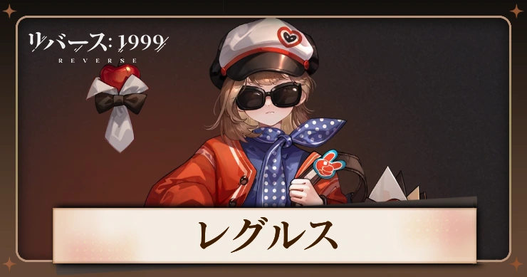
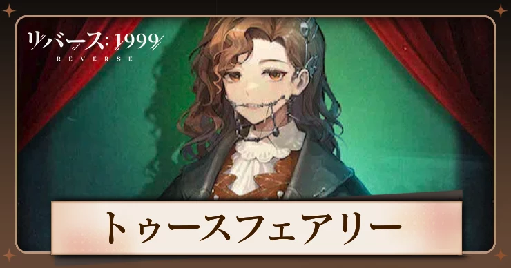

Character
獣

神秘学家の芸術作品。
20世紀30年代から、計19年間展示された。
展示開始日は8月13日、夏。
展示場所：アメリカ合衆国のラスベガスにて初公開され、後にヨーロッパ各地で活躍した。
神秘学家の芸術作品。
20世紀90年代末から、計18年間展示された。
展示開始日は11月24日、冬。
展示場所：アメリカ合衆国のユタ州にて初公開された後に、ラプラス計算科学研究センターへと移設された。
オカルティスト芸術作品。
1960年代に展示、18年間展示された。
3月20日春生まれ。
様々な場所で展示され、最近ではグレートブリテンおよび北アイルランド連合王国のグレーター・ロンドンに巡回。
星
神秘学家の芸術作品。
20世紀後半から展示された。展示年数は明確ではない。
展示開始日は11月14日、秋。
展示場所:ソビエト社会主義共和国連邦のモスクワにて展示され、以来ほとんど国内にて保管されている。

神秘学家の芸術作品。
20世紀半ばから計15年間展示された。
展示開始日は8月15日、夏。
展示場所:グレートブリテン及びアイルランド連合王国の
グレーターロンドンにて初公開され、後に世界中で展示された。
超自然者の芸術作品。
20世紀半ばに展示され、展示年数は不明。
展示開始日は11月12日、冬。
展示場所:初期の展示場所は不明。
世界各地での活躍を経て、最終的にソビエト社会主義共和国連邦で発見され、
聖パブロフ財団によって引き取られた。

神秘学家の展示品。
20世紀90年代から、合計25年間展示された。
展示開始日は11月27日、冬。
展示場所：グレートブリテン及びアイルランド連合王国のチェシャーにて初公開され、
近頃は世界各国で巡回展示が行われている。
木
神秘学家の芸術作品。
20世紀初頭から、計20年間展示された。
展示開始日は10月23日秋。
展示場所:アメリカ合衆国のワシントンD.C.にて展示されていたが、
後にヨーロッパにて保管された。
神秘学家の芸術作品。
20世紀初頭から、計13年間展示された。
展示開始日は4月15日、春。
展示場所:グレートブリテン及びアイルランド連合王国の
シティ・オブ・ウェストミンスターにて展示された。
神秘学家の芸術作品。
20世紀90年代末から、計16年間展示された。
展示開始日は7月27日夏。
展示場所:中華人民共和国の香港にて展示された。
一時期イタリアにて出張展示されたこともある。
超自然者の展示品。
20世紀90年代から、合計27年間展示された。
展示開始日は4月11日、春。
展示場所：アイルランド共和国にて初公開され、後にアメリカ合衆国南東部のフロリダ州へと移設された。
岩
神秘学道の芸術作品。
20世紀90年代から、合計1世紀にわたり展示された。
展示開始日は12月25日、冬。
展示場所：アメリカ合衆国のエクセター町にて初公開された後に、
米州の各地で活躍した。
神秘学家の芸術作品。
20世紀80年代から、計25年間展示された。
展示開始日は11月16日秋。
展示場所:アメリカ合衆国のニューヨーク市にて初公開され、
その後世界各地で巡回展示された。
神秘学家の芸術作品。
20世紀60年代に、合計4年間展示された。
完成日は10月27日、秋。
展示場所：グレートブリテン及びアイルランド連合王国のグレーター・ロンドンにて展示された。
霊